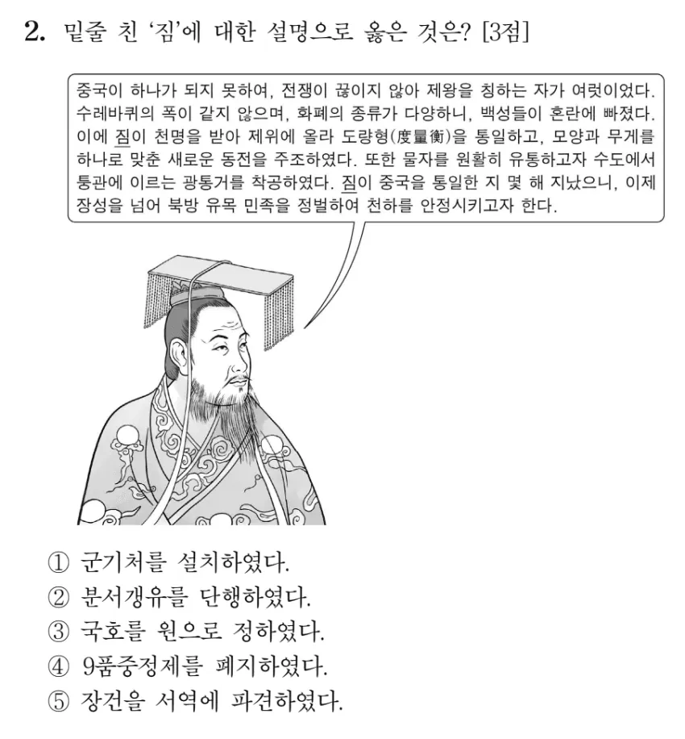
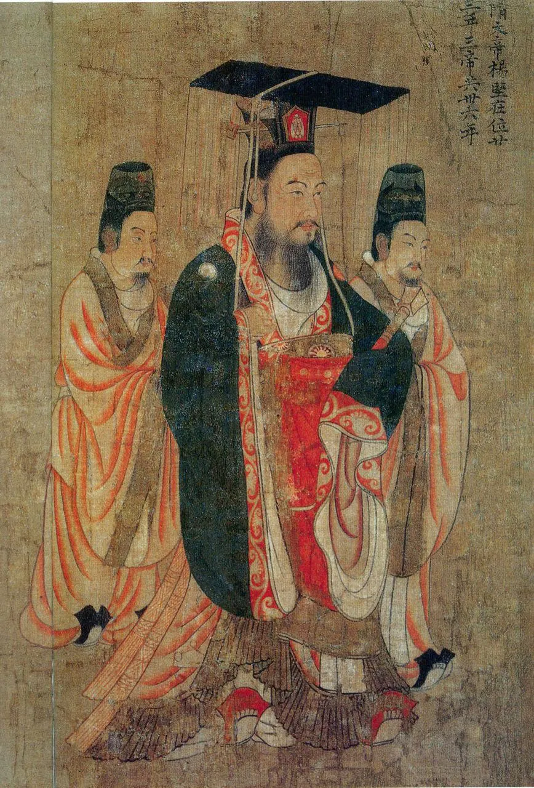
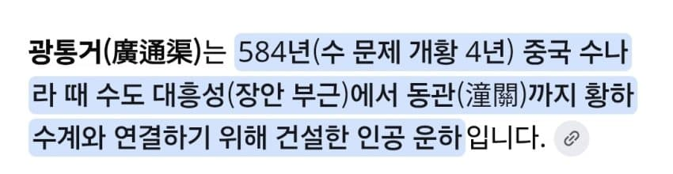

정답 4번

사진 속 인물은 수 문제文帝
1번 군기처 설치: 청나라 옹정제
2번 분서갱유: 진시황제
3번 국호를 원으로 정함: 원나라 쿠빌라이 칸
4번 9품중정제 폐지: 9품중정제 폐지 후 과거제를 실시한 문제
5번 장건을 서역에 파견: 한 무제
언뜻보면 진시황제 같지만

광통거 이야기를 통해 수나라 시대라는걸 알 수 있음,,,
개악질 문제타입으로 전국 통일, 도량형 언급, 언뜻보기에 진시황 그림 같은 일러스트를 배치하며 수많은 수능생들을 낚아버림
댓글
수집 당시 댓글 632개
· ㅇㅇ · 11.20 16:27:02
· ㅇㅇ · 11.20 16:27:03
· ㅇㅇ · 11.20 16:27:25
· ㅇㅇ · 11.20 16:27:53
· <:)~ · 11.20 16:31:43
· ㅇㅇ · 11.20 16:33:21
· ㅇㅇ · 11.20 16:34:24
· <:)~ · 11.20 16:35:37
· ㅇㅇ · 11.20 16:36:34
· ㅇㅇ · 11.20 16:37:10
· <:)~ · 11.20 16:37:55
· <:)~ · 11.20 16:39:41
· ㅇㅇ · 11.20 16:40:25
· <:)~ · 11.20 16:40:45
· <:)~ · 11.20 16:41:03
· ㅇㅇ · 11.20 16:41:14
· <:)~ · 11.20 16:41:40
· <:)~ · 11.20 16:41:56
· ㅇㅇ · 11.20 16:47:06
ㅇㅇ · 11.20 16:00:37
ㅇㅇ · 11.20 16:00:44
ㅇㅇ · 11.20 16:03:37
· ㅇㅇ · 11.20 16:04:06
· ㅇㅇ · 11.20 17:09:24
ㅇㅇ · 11.20 16:07:19
전설의잉여 · 11.20 16:08:15
ㅇㅇ · 11.20 16:12:08
ㅇㅇ · 11.20 16:12:22
깡 · 11.20 16:13:28
· ㅇㅇ · 11.20 17:27:33
ㅇㅇ · 11.20 16:15:20
명륜질사갈비 · 11.20 16:18:06
히이잉 · 11.20 16:21:08
ㅇㅇ · 11.20 16:21:15
· ㅇㅇ · 11.20 16:45:58
· ㅇㅇ · 11.20 18:42:47
· ㅇㅇ · 11.20 18:52:53
ㅇㅇ · 11.20 16:29:33
· ㅇㅇ · 11.20 16:30:50
<:)~ · 11.20 16:31:08
ㅇㅇ · 11.20 16:31:37
· ㅇㅇ · 11.20 16:33:16
· ㅇㅇ · 11.20 16:36:01
· ㅇㅇ · 11.20 16:58:46
· ㅇㅇ · 11.20 17:31:17
· ㅇㅇ · 11.20 17:41:55
· 풀러리 · 11.20 18:19:52
ㅇㅇ · 11.20 16:35:28
· ㅇㅇ · 11.20 16:37:44
· ㅇㅇ · 11.20 18:43:11
ㅇㅇ · 11.20 16:38:47
야갤러 · 11.20 16:43:16
ㅇㅇ · 11.20 16:47:47
ㅇㅇ · 11.20 16:47:50
ㅇㅇ · 11.20 16:50:09
· ㅇㅇ · 11.20 17:11:50
ㅇㅇ · 11.20 16:55:23
2456778 · 11.20 16:55:29
문디배설 · 11.20 16:58:10
알카 · 11.20 17:01:15
ㅇㅇ · 11.20 17:11:03
ㅇㅇ · 11.20 17:11:49
ㅇㅇ · 11.20 17:26:57
ㅇㅇ · 11.20 17:30:32
ㅇㅇ · 11.20 17:39:25
· ㅇㅇ · 11.20 17:39:55
· ㅇㅇ · 11.20 17:52:34
ㅇㅇ · 11.20 17:41:08
ㅇㅇ · 11.20 17:43:37
ㅇㅇ · 11.20 17:47:27
ㅇㅇ · 11.20 17:51:05
ㅇㅇ · 11.20 17:52:21
ㅇㅇ · 11.20 17:57:27
· ㅇㅇ · 11.20 17:58:13
· ㅇㅇ · 11.20 18:52:27
ㅇㅇ · 11.20 17:58:51
ㅇㅇ · 11.20 18:11:10
· ㅇㅇ · 11.20 18:20:34
· ㅇㅇ · 11.20 18:41:08
ㅇㅇ · 11.20 18:20:17
ㅇㅇ · 11.20 18:23:05
ㅇㅇ · 11.20 18:27:27
ㅇㅇ · 11.20 18:28:08
ㅇㅇ · 11.20 18:32:20
코인중독 · 11.20 18:34:23
ㅇㅇ · 11.20 18:40:23
ㅇㅇ · 11.20 18:51:34
ㅇㅇ · 11.20 18:54:39
ㅇㅇ · 11.20 18:56:48
· ㅇㅇ · 11.20 18:57:10
ㅇㅇ · 11.20 18:57:59
ㅇㅇ · 11.20 19:11:03
ㅇㅇ · 11.20 19:12:47
ㅇㅇ · 11.20 19:28:20
ㅇㅇ · 11.20 19:28:54
ㅇㅇ · 11.20 19:30:12
ㅇㅇ · 11.20 19:41:03
ㅇㅇ · 11.20 19:45:11
도깨비빤스 · 11.20 19:46:53
스마라딘 · 11.20 19:50:09
ㅇㅇ · 11.20 15:23:52
· ㅇㅇ · 11.20 15:26:07
· ㅇㅇ · 11.20 15:27:26
· ㅇㅇ · 11.20 15:28:11
ㅇㅇ · 11.20 15:25:40
· ㅇㅇ · 11.20 15:27:58
트갤용계정 · 11.20 15:26:47
ㅇㅇ · 11.20 15:27:23
ㅇㅇ · 11.20 15:27:33
ㅇㅇ · 11.20 15:29:07
· ㅇㅇ · 11.20 15:30:02
· ㅇㅇ · 11.20 15:30:47
· ㅇㅇ · 11.20 15:31:31
· ㅇㅇ · 11.20 15:31:34
· ㅇㅇ · 11.20 15:38:56
· ㅇㅇ · 11.20 15:44:24
JM · 11.20 15:29:56
ㅇㅇ · 11.20 15:30:45
천년군주 · 11.20 15:31:51
ㅇㅇ · 11.20 15:32:00
· ㅇㅇ · 11.20 15:35:07
· ㅇㅇ · 11.20 16:09:23
히이잉 · 11.20 15:33:08
ㅇㅇ · 11.20 15:34:06
ㅇㅇ · 11.20 15:34:43
유메노유키 · 11.20 15:35:48
· ㅇㅇ · 11.20 15:36:47
· ㅇㅇ · 11.20 15:37:06
· 유메노유키 · 11.20 15:39:10
· ㅇㅇ · 11.20 15:42:37
· 유메노유키 · 11.20 15:43:51
· ㅇㅇ · 11.20 15:45:18
· ㅇㅇ · 11.20 15:45:54
· ㅇㅇ · 11.20 15:46:55
· 유메노유키 · 11.20 15:48:02
· ㅇㅇ · 11.20 15:48:20
· 유메노유키 · 11.20 15:48:38
· ㅇㅇ · 11.20 15:49:41
· 유메노유키 · 11.20 15:53:45
· ㅇㅇ · 11.20 15:54:41
· 유메노유키 · 11.20 15:55:12
ㅇㅇ · 11.20 15:38:27
· ㅇㅇ · 11.20 15:38:46
· ㅇㅇ · 11.20 15:39:50
· ㅇㅇ · 11.20 15:40:17
· ㅇㅇ · 11.20 15:57:30
· ㅇㅇ · 11.20 15:59:46
· ㅇㅇ · 11.20 16:00:53
· ㅇㅇ · 11.20 16:43:37
ㅇㅇ · 11.20 15:38:38
펜도르 · 11.20 15:38:44
ㅇㅇ · 11.20 15:43:30
ㅇㅇ · 11.20 15:45:40
ㅇㅇ · 11.20 15:46:59
ㅇㅇ · 11.20 15:50:10
ㅇㅇ · 11.20 15:54:02
ㅇㅇ · 11.20 15:55:08
· ㅇㅇ · 11.20 15:56:57
· ㅇㅇ · 11.20 15:58:31
이지러너 · 11.20 15:57:39
· ㅇㅇ · 11.20 17:32:17
폴렌 · 11.20 15:58:04
· ㅇㅇ · 11.20 15:58:59
· 폴렌 · 11.20 16:04:24
· ㅇㅇ · 11.20 17:08:57
ㅇㅇ · 11.20 15:58:53
88 · 11.20 15:58:53
ㅇㅇ · 11.20 16:00:04
· ㅇㅇ · 11.20 16:00:53
· ㅇㅇ · 11.20 16:02:02
· ㅇㅇ · 11.20 16:03:17
· ㅇㅇ · 11.20 16:03:21
· ㅇㅇ · 11.20 16:04:18
· ㅇㅇ · 11.20 16:05:17
· ㅇㅇ · 11.20 16:05:37
· ㅇㅇ · 11.20 16:06:22
· ㅇㅇ · 11.20 16:06:44
· ㅇㅇ · 11.20 16:07:29
· ㅇㅇ · 11.20 16:08:17
· ㅇㅇ · 11.20 16:09:16
· ㅇㅇ · 11.20 16:10:39
· ㅇㅇ · 11.20 16:11:52
· ㅇㅇ · 11.20 16:12:24
· ㅇㅇ · 11.20 16:13:37
· ㅇㅇ · 11.20 16:14:19
· ㅇㅇ · 11.20 16:14:40
· ㅇㅇ · 11.20 16:15:08
· ㅇㅇ · 11.20 16:15:55
· ㅇㅇ · 11.20 16:17:01
· ㅇㅇ · 11.20 16:17:48
· ㅇㅇ · 11.20 16:20:00
· ㅇㅇ · 11.20 16:20:18
· ㅇㅇ · 11.20 16:20:30
· ㅇㅇ · 11.20 16:21:21
· ㅇㅇ · 11.20 16:21:29
· ㅇㅇ · 11.20 16:22:21
· ㅇㅇ · 11.20 16:22:33
· ㅇㅇ · 11.20 16:22:50
· ㅇㅇ · 11.20 16:23:51
· ㅇㅇ · 11.20 16:26:27
한녀붕이 · 11.20 14:49:58
· 한녀붕이 · 11.20 14:52:22
· ㅇㅇ · 11.20 14:53:31
· ㅇㅇ · 11.20 14:55:57
· ㅇㅇ · 11.20 14:57:35
· ㅇㅇ · 11.20 15:13:11
ㅇㅇ · 11.20 14:50:05
ㅇㅇ · 11.20 14:50:39
· 실베현자 · 11.20 14:53:46
· ㅇㅇ · 11.20 15:24:14
ㅇㅇ · 11.20 14:50:56
· ㅇㅇ · 11.20 14:52:50
· ㅇㅇ · 11.20 15:33:34
ㅇㅇ · 11.20 14:51:38
· ㅇㅇ · 11.20 14:53:54
· ㅇㅇ · 11.20 14:54:35
ㅇㅇ · 11.20 14:52:23
· ㅇㅇ · 11.20 14:55:44
· 실베현자 · 11.20 14:55:59
· ㅇㅇ · 11.20 14:57:55
· ㅇㅇ · 11.20 14:58:18
· ㅇㅇ · 11.20 15:35:43
· ㅇㅇ · 11.20 15:36:36
ㅇㅇ · 11.20 14:52:42
ㅇㅇ · 11.20 14:52:43
ㅇㅇ · 11.20 14:53:22
ㅇㅇ · 11.20 14:53:28
ㅇㅇ · 11.20 14:54:31
마슈마론 · 11.20 14:54:51
ㅇㅇ · 11.20 14:55:12
ㅇㅇ · 11.20 14:55:37
ㅇㅇ · 11.20 14:55:40
· ㅇㅇ · 11.20 14:56:23
· ㅇㅇ · 11.20 14:56:47
· ㅇㅇ · 11.20 15:15:15
ㅇㅇ · 11.20 14:56:46
· ㅇㅇ · 11.20 15:27:26
ㅇㅇ · 11.20 14:57:34
히이잉 · 11.20 14:57:56
ㅇㅇ · 11.20 14:58:41
· ㅇㅇ · 11.20 15:07:29
· ㄱㄴㄷ · 11.20 15:16:53
· ㅇㅇ · 11.20 15:41:19
ㅇㅇ · 11.20 15:00:06
ㅇㅇ · 11.20 15:01:38
123 · 11.20 15:02:27
· 123 · 11.20 15:06:40
원산 · 11.20 15:04:04
ㅇㅇ · 11.20 15:04:09
흰설기 · 11.20 15:04:54
ㅇㅇ · 11.20 15:05:00
· ㅇㅇ · 11.20 15:05:20
· ㅇㅇ · 11.20 15:06:15
· 123 · 11.20 15:10:22
· ㅇㅇ · 11.20 15:10:50
· ㅇㅇ · 11.20 15:10:58
· 123 · 11.20 15:12:08
· ㅇㅇ · 11.20 15:12:29
ㅇㅇ · 11.20 15:05:02
211.234 · 11.20 15:06:04
모나코피카츄 · 11.20 15:06:37
· 모나코피카츄 · 11.20 15:06:42
· RTX5090오너 · 11.20 15:56:11
ㅇㅇ · 11.20 15:07:47
ㅇㅇ · 11.20 15:08:23
ㅇㅇ · 11.20 15:10:36
로리행보관 · 11.20 15:10:39
ㅇㅇ · 11.20 15:11:10
ㅇㅇ · 11.20 15:12:17
ㅇㅇ · 11.20 15:12:44
c8 · 11.20 15:13:38
ㅇㅇ · 11.20 15:15:38
· ㅇㅇ · 11.20 15:17:56
· ㅇㅇ · 11.20 15:21:41
· ㅇㅇ · 11.20 15:26:43
· ㅇㅇ · 11.20 16:06:15
Astro · 11.20 15:15:53
ㅇㅇ · 11.20 15:15:59
ㅇㅇ · 11.20 15:16:54
· ㅇㅇ · 11.20 15:19:04
· ㅇㅇ · 11.20 15:36:16
· ㅇㅇ · 11.20 15:58:07
· ㅇㅇ · 11.20 16:02:21
ㅇㅇ · 11.20 15:17:27
ㅇㅇ · 11.20 15:17:53
· ㅇㅇ · 11.20 15:18:02
ㅇㅇ · 11.20 15:19:00
ㅋㅋ · 11.20 15:19:21
ㅇㅇ · 11.20 15:19:49
· ㅇㅇ · 11.20 15:21:28
· ㅇㅇ · 11.20 15:22:20
· ㅇㅇ · 11.20 15:24:38
· ㅇㅇ · 11.20 15:25:19
텔붕이 · 11.20 15:19:55
ㅇㅇ · 11.20 15:22:39
dd · 11.20 15:23:18
· ㅇㅇ · 11.20 15:26:01
· ㅇㅇ · 11.20 15:26:50
· ㅇㅇ · 11.20 15:40:29
ㅇㅇ · 11.20 15:23:30
· ㅇㅉ · 11.20 14:31:50
· ㅇㅇ · 11.20 14:32:26
· ㅇㅇ · 11.20 14:34:22
· ㅇㅉ · 11.20 14:35:20
ㅇㅇ · 11.20 14:27:37
ㅇㅇ · 11.20 14:27:38
실베현자 · 11.20 14:27:47
ㅇㅇ · 11.20 14:28:52
털보 · 11.20 14:29:35
ㅇㅇ · 11.20 14:29:36
· ㅇㅇ · 11.20 14:50:49
· ㅇㅇ · 11.20 15:39:06
· ㅇㅇ · 11.20 18:04:01
ㅇㅇ · 11.20 14:30:17
ㅇㅇ · 11.20 14:31:00
ㅇㅇ · 11.20 14:31:18
· ㅇㅇ · 11.20 14:53:02
ㅇㅇ · 11.20 14:31:21
· ㅇㅇ · 11.20 14:34:06
♡♡♡♡♡ · 11.20 14:32:12
· ♡♡♡♡♡ · 11.20 14:33:03
· ㅇㅇ · 11.20 14:33:46
· ♡♡♡♡♡ · 11.20 14:34:25
ㅇㅇ · 11.20 14:32:40
· ㅇㅇ · 11.20 14:33:03
· ㅇㅇㅇ · 11.20 14:45:12
· ㅇㅇ · 11.20 14:48:09
· ㅇㅇ · 11.20 14:49:04
ㅇㅇ · 11.20 14:32:49
ㅇㅇ · 11.20 14:33:09
ㅇㅇ · 11.20 14:33:10
· ㅇㅇ · 11.20 14:34:55
ㅇㅇ · 11.20 14:33:28
삭제됨 · 11.20 14:33:32
· ㅇㅇ · 11.20 14:36:14
· ㅇㅇ · 11.20 14:38:00
예수 · 11.20 14:34:54
예수 · 11.20 14:35:06
예수 · 11.20 14:35:15
예수 · 11.20 14:35:22
예수 · 11.20 14:35:34
예수 · 11.20 14:35:48
ㅇㅇ · 11.20 14:35:51
방사거북 · 11.20 14:36:06
· 방사거북 · 11.20 14:36:13
ㅇㅇ · 11.20 14:36:35
ㅇㅇ · 11.20 14:36:55
· ㅇㅇ · 11.20 14:41:09
ㅇㅇ · 11.20 14:37:22
ㅇㅇ · 11.20 14:37:36
Indie · 11.20 14:37:54
ㅇㅅㅇㅁㅇㅈㅇ · 11.20 14:38:27
· ㅇㅅㅇㅁㅇㅈㅇ · 11.20 14:44:15
· ㅇㅇ · 11.20 14:49:42
· ㅇㅅㅇㅁㅇㅈㅇ · 11.20 14:50:00
ㅁㅁㅁㅁ · 11.20 14:38:50
ㅇㅇ · 11.20 14:39:05
ㅇㅇ · 11.20 14:39:23
ㅇㅇ · 11.20 14:40:00
· ㅇㅇ · 11.20 14:40:25
· ㅇㅇ · 11.20 14:43:53
· ㅇㅇ · 11.20 14:43:53
오대성 · 11.20 14:40:23
· ㅇㅇ · 11.20 14:43:22
· ㅇㅇ · 11.20 14:58:56
ㅇㅇ · 11.20 14:40:59
ㅇㅇ · 11.20 14:41:05
ㅇㅇ · 11.20 14:41:04
· 수류탄이야 · 11.20 14:42:37
· 주노 · 11.20 14:43:10
· ㅇㅇ · 11.20 14:45:00
ㅇㅇ · 11.20 14:41:17
ㅇㅇ · 11.20 14:41:43
왕가슴_ · 11.20 14:42:17
ㅇㅇ · 11.20 14:42:53
· ㅇㅇ · 11.20 14:44:34
· ㅇㅇ · 11.20 14:45:26
· ㅇㅇ · 11.20 14:46:07
· ㅇㅇ · 11.20 14:46:19
ㅇㅇ · 11.20 14:45:07
· ㅇㅇ · 11.20 15:21:22
ㅇㅇ · 11.20 14:45:15
· ㅇㅇ · 11.20 14:45:21
ㅇㅇ · 11.20 14:45:16
· ㅇㅇ · 11.20 14:46:53
멋진남자 · 11.20 14:45:22
ㅇㅇ · 11.20 14:45:29
ㅇㅇ · 11.20 14:45:37
ㅇㅇ · 11.20 14:46:38
ㅇㅇ · 11.20 14:46:48
ㅇㅇ · 11.20 14:47:06
ㅇㅇ · 11.20 14:47:32
123 · 11.20 14:48:15
· 123 · 11.20 14:50:13
ㅇㅇ · 11.20 14:48:27
ㅇㅇ · 11.20 14:49:13
· ㅇㅇ · 11.20 15:11:04
ㅇㅇ · 11.20 14:49:18
비갤러 · 11.20 14:49:18
· ㅇㅇ · 11.20 14:53:09
bookeater1 · 11.20 14:16:15
micro멍거 · 11.20 14:16:24
· ㅇㅇ · 11.20 14:16:59
ㅇㅇ · 11.20 14:16:29
ㅇㅇ · 11.20 14:16:39
· ㅇㅇ · 11.20 14:17:40
· ㅇㅇ · 11.20 14:23:19
· ㅇㅇ · 11.20 14:32:53
· ㅇㅇ · 11.20 14:59:24
ㅇㅇ · 11.20 14:17:05
ㅇㅇ · 11.20 14:17:20
· ㅇㅇ · 11.20 14:21:25
ㅇㅇ · 11.20 14:17:30
· ㅇㅇ · 11.20 14:17:56
· ㅇㅇ · 11.20 14:18:01
· ㅇㅇ · 11.20 14:18:08
· ㅇㅇ · 11.20 14:18:43
· ㅇㅇ · 11.20 14:21:24
· ㅇㅇ · 11.20 14:23:53
ㅇㅇ · 11.20 14:17:45
ㅇㅇ · 11.20 14:17:51
· ㅇㅇ · 11.20 14:19:21
ㅇㅇ · 11.20 14:17:56
타카기쨩 · 11.20 14:17:57
· 타카기쨩 · 11.20 14:19:17
ㅇㅇ · 11.20 14:18:08
ㅇㅇ · 11.20 14:18:51
ㅇㅇ · 11.20 14:19:14
ㅇㅇ · 11.20 14:19:16
· ㅇㅇ · 11.20 14:20:19
· ㅇㅇ · 11.20 14:23:23
ㅇㅇ · 11.20 14:19:18
ㅇㅇ · 11.20 14:19:43
ㅇㅇ · 11.20 14:20:04
ㅇㅇ · 11.20 14:20:04
· ㅇㅇ · 11.20 14:20:54
· ㅇㅇ · 11.20 14:49:10
ㅇㅇ · 11.20 14:20:33
· ㅇㅇ · 11.20 14:22:49
· ㅇㅇ · 11.20 15:21:50
눔나 · 11.20 14:20:44
ㅇㅇ · 11.20 14:20:45
· ㅇㅇ · 11.20 14:21:42
· 수류탄이야 · 11.20 14:22:26
· ㅇㅇ · 11.20 14:23:19
· ㅇㅇ · 11.20 14:23:48
· ㅇㅇ · 11.20 14:24:18
· 신 석 열 · 11.20 14:24:42
· 수류탄이야 · 11.20 14:25:13
· ㅇㅇ · 11.20 14:26:00
· ㅇㅇ · 11.20 14:27:11
· ㅇㅇ · 11.20 14:28:15
· ㅇㅇ · 11.20 14:29:23
· ㅇㅇ · 11.20 14:38:45
· ㅇㅇ · 11.20 14:38:50
· ㅇㅇ · 11.20 14:39:49
· ㅇㅇ · 11.20 16:53:54
· ㅇㅇ · 11.20 19:17:32
ㅇㅇ · 11.20 14:20:58
ㅇㅇ · 11.20 14:21:34
ㅇㅇ · 11.20 14:21:39
ㅇㅇ · 11.20 14:22:17
ㅇㅇ · 11.20 14:22:25
ㅇㅇ · 11.20 14:22:32
ㅇㅇ · 11.20 14:22:33
ㅇㅇ · 11.20 14:22:36
ㅇㅇ · 11.20 14:22:52
ㅇㅇ · 11.20 14:23:00
ㅇㅇ · 11.20 14:23:22
ㅇㅇ · 11.20 14:23:29
ㅇㅇ · 11.20 14:23:52
ㅇㅇ · 11.20 14:24:07
· ㅇㅇ · 11.20 14:25:26
· ㅇㅇ · 11.20 14:36:12
· ㅇㅇ · 11.20 14:40:39
ㅇㅇ · 11.20 14:24:25
· ㅇㅇ · 11.20 14:34:00
세이류 · 11.20 14:24:42
ㅇㅇ · 11.20 14:24:53
ㅇㅇ · 11.20 14:24:54
· 슈밤베르크 · 11.20 14:39:43
ㅇㅇ · 11.20 14:25:03
ㅇㅇ · 11.20 14:25:10
ㅇㅇ · 11.20 14:25:11
ㅇㅇ · 11.20 14:25:33
· ㅇㅇ · 11.20 14:27:57
· ㅇㅇ · 11.20 14:29:04
· ㅇㅇ · 11.20 14:30:40
· ㅇㅉ · 11.20 14:33:14
· ㅇㅇ · 11.20 14:36:09
· ㅇㅇ · 11.20 14:37:04
ㅇㅇ · 11.20 14:25:46
· ㅇㅇ · 11.20 14:26:57
· ㅇㅇ · 11.20 14:28:57
· ㅇㅇ · 11.20 14:43:20
ㅇㅇ · 11.20 14:26:05
· ㅇㅇ · 11.20 14:42:30
ㅇㅉ · 11.20 14:26:53
· ㅇㅇ · 11.20 14:30:52
· ㅇㅇ · 11.20 14:31:08
섹시한chulsu · 11.20 12:11:18
로지보리자파궁열항탈문장질사내정임낙신태 · 11.20 12:15:18
ㅇㅇ · 11.20 12:23:52
· 개댇지 · 11.20 12:58:43
· 수류탄이야 · 11.20 12:59:57
ㅇㅇ · 11.20 12:53:18
· ヱガホ · 11.20 13:13:53
· ㅇㅇ · 11.20 14:21:06
바쇽 · 11.20 12:55:43
ㅇㅇ · 11.20 12:59:06
· ㅇㅇ · 11.20 13:16:44
· 설탕물 · 11.20 13:22:06
· 메가커피 · 11.20 13:48:46
· ㆁㆁ · 11.20 14:07:52
SundayMove · 11.20 13:05:00
처녀비치 · 11.20 13:25:52
· WakandaHanzo · 11.20 13:35:47
· ㅇㅇ · 11.20 14:07:50
고래 · 11.20 13:38:39
가사이유노 · 11.20 13:40:32
ㅇㅇ · 11.20 13:42:08
ㅇㅇ · 11.20 13:44:06
ㅇㅇ · 11.20 13:52:48
ㅇㅇ · 11.20 14:01:04
봇치쟝 · 11.20 14:06:43
ㅇㅇ · 11.20 14:07:15
ㅍㅍㄷㅅ · 11.20 14:07:41
· ㅇㅇ · 11.20 14:14:26
· ㅍㅍㄷㅅ · 11.20 14:15:01
· ㅇㅇ · 11.20 14:17:23
· ㅇㅉ · 11.20 14:28:40
· ㅇㅇ · 11.20 14:29:41
ㅇㅇ · 11.20 14:08:02
ㅇㅇ · 11.20 14:08:07
· ㅇㅇ · 11.20 14:19:36
· ㅇㅇ · 11.20 14:21:35
· ㅇㅇ · 11.20 16:35:19
ㅇㅇ · 11.20 14:08:11
신 석 열 · 11.20 14:08:36
ㅇㅇ · 11.20 14:08:57
kzine · 11.20 14:09:01
SonyXperia · 11.20 14:09:09
ㅇㅇ · 11.20 14:09:28
ㅇㅇ · 11.20 14:09:39
restinpieceofcake · 11.20 14:09:43
ㅇㅇ · 11.20 14:09:43
순수비난 · 11.20 14:09:58
· 순수비난 · 11.20 14:12:15
삭제됨 · 11.20 14:10:00
· ㅇㅇ · 11.20 14:12:48
ㅇㅇ · 11.20 14:10:02
존버맨 · 11.20 14:10:02
ㅇㅇ · 11.20 14:10:07
ㅇㅇ · 11.20 14:10:16
ㅇㅇ · 11.20 14:10:20
ㅇㅇ · 11.20 14:10:31
ㅇㅇ · 11.20 14:10:41
ㅁㄴㅇㄹ · 11.20 14:10:50
ㅇㅇ · 11.20 14:10:52
ㅇㅇ · 11.20 14:11:16
04T · 11.20 14:11:39
ㅇㅇ · 11.20 14:11:43
신 석 열 · 11.20 14:11:49
ㅇㅇ · 11.20 14:12:01
· ㅇㅇ · 11.20 14:13:08
· ㅇㅇ · 11.20 14:19:45
ㅇㄷㄹㄴ · 11.20 14:12:06
ㅇㅇ · 11.20 14:12:08
ㅇㅇ · 11.20 14:12:08
ㅇㅇ · 11.20 14:12:22
ㅇㅇ · 11.20 14:12:51
ㅇㅇ · 11.20 14:13:05
· 신 석 열 · 11.20 14:13:29
ㅇㅇ · 11.20 14:13:10
· ㅇㅇ · 11.20 14:13:49
· ㅇㅇ · 11.20 14:14:13
· ㅇㅇ · 11.20 14:15:24
· ㅇㅇ · 11.20 14:27:27
· ㅇㅇ · 11.20 15:06:32
ㅇㅇ · 11.20 14:13:10
micro멍거 · 11.20 14:13:12
Ragnarr · 11.20 14:13:20
· Ragnarr · 11.20 14:13:30
· ㅇㅇ · 11.20 14:15:12
· ㅇㅇ · 11.20 14:16:27
· ㅇㅇ · 11.20 14:17:45
ㅇㅇ · 11.20 14:13:22
논두렁엔딩 · 11.20 14:13:29
· ㅇㅇ · 11.20 14:14:47
ㅇㅇ · 11.20 14:13:37
ㅇㅇ · 11.20 14:13:43
ㅇㅇ · 11.20 14:14:01
ㅇㅇ · 11.20 14:14:41
헤헷 · 11.20 14:15:11
헌트 · 11.20 14:15:11
ㅇㅇ · 11.20 14:15:13
ㅇㅇ · 11.20 14:15:19
ㅇㅇ · 11.20 14:16:12
· 순수비난 · 11.20 14:16:28
순수비난 · 11.20 14:16:13
ㅇㅇ · 11.20 11:58:45
마유미 · 11.20 11:58:55
ㅇㅇ · 11.20 11:59:58
ㅇㅇ · 11.20 12:00:00
· ㅇㅇ · 11.20 12:04:13
· ㅇㅇ · 11.20 12:50:45
· ㅇㅇ · 11.20 13:06:36
· ㅇㅇ · 11.20 13:31:05
· 메가커피 · 11.20 13:47:21
· ㅇㅇ · 11.20 13:56:33
· ㅇㅇ · 11.20 14:08:51
· ㅇㅇ · 11.20 14:12:04
· ㅇㅇ · 11.20 14:15:04
· ㅇㅇ · 11.20 14:41:36
· ㅇㅇ · 11.20 15:24:17
ㅇㅇ · 11.20 12:00:01
밋아 · 11.20 12:00:28
ㅇㅇ · 11.20 12:00:32
ㅇㅇ · 11.20 12:01:05
· ㅇㅇ · 11.20 12:02:59
· 이의현 · 11.20 12:28:37
· ㅇㅇ · 11.20 13:04:19
· SundayMove · 11.20 13:05:21
· ㅇㅇ · 11.20 13:13:24
· ㅇㅇ · 11.20 14:14:46
· ㅇㅇ · 11.20 14:50:20
스틸콜드 · 11.20 12:02:46
남극곰 · 11.20 12:02:51
ㅇㅇ · 11.20 12:04:01
· hajamm · 11.20 12:41:02
· ㅇㅇ · 11.20 13:42:19
· ㅇㅇ · 11.20 14:21:24